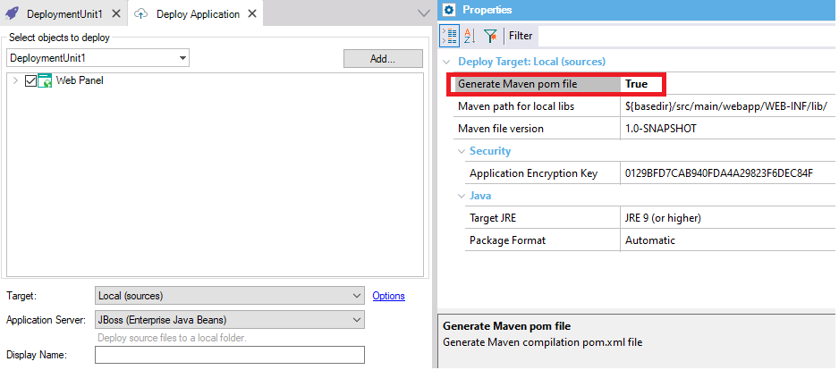

Level: Deploy Target Options
For Java models, within the Application Deployment tool, the Generate Maven pom file property is available when "Target = Local (sources)" is selected. Also, when this property is selected, other related properties are available as well.
Maven path for local libs property allows indicating the path where Maven expects the required jars (libs) for the compilation of the app to be located, in cases when no Maven dependency is known.

This property is available since GeneXus 16 upgrade 4.